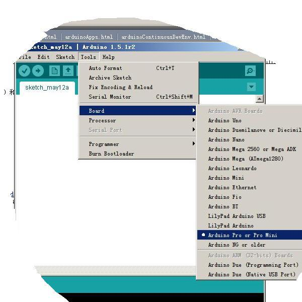
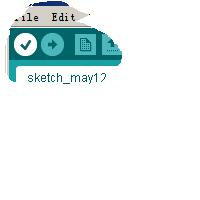

简介
Arduino ProMini是Arduino Mini的半定制版本，所有外部引脚通孔没有焊接，与Mini版本管脚兼容。Arduino ProMini的处理器核心是ATmega168，同时具有14路数字输入/输出口（其中6路可作为PWM输出），6路模拟输入，一个晶体谐振，一个复位按钮。有两个版本：
- 工作在3.3V和8MHz时钟
- 工作在5V和16MHz时钟

概要
- 处理器 ATmega168
- 工作电压 3.3V or 5V
- 输入电压 3.35V-12V or 5-12V
- 数字IO脚 14 (其中6路作为PWM输出）
- 模拟输入脚 6
- IO脚直流电流 40 mA
- Flash Memory 16 KB （其中2 KB 用于 bootloader）
- SRAM 1 KB （ATmega328）
- EEPROM 0.5 KB （ATmega328）
- 工作时钟 8 MHz or 16 MHz
电路图和PCB
- 电路图?http://arduino.cc/en/uploads/Main/Arduino-Pro-Mini-schematic.pdf
- 硬件设计文件（Eagle文件）?http://arduino.cc/en/uploads/Main/arduino-pro-mini-reference-design.zip
电源
Arduino ProMini可以通过FTDI线或者焊接6脚Header，也可以通过电源引脚接入外部直流电源。 电源引脚说明
- RAW --- 外部直流电源接入引脚，raw代表接入的可以是电池或者其他直流电源。
- VCC --- 通过稳压器产生的3.3V或者5V电压。
- GND --- 地脚。
存储器
ATmega168包括了片上16KB Flash，其中2KB用于Bootloader。同时还有1KB SRAM和0.5KB EEPROM。
输入输出
- 14路数字输入输出口：工作电压为3.3V或者5V，每一路能输出和接入最大电流为40mA。每一路配置了20-50K欧姆内部上拉电阻（默认不连接)。除此之外，有些引脚有特定的功能
- 串口信号RX（0号）、TX（1号）: 提供TTL电压水平的串口接收信号，可以与6脚Header通孔相连。
- 外部中断（2号和3号）：触发中断引脚，可设成上升沿、下降沿或同时触发。
- 脉冲宽度调制PWM（3、5、6、9、10 、11）：提供6路8位PWM输出。
- SPI（10(SS)，11(MOSI)，12(MISO)，13(SCK)）：SPI通信接口。
- LED（13号）：Arduino专门用于测试LED的保留接口，输出为高时点亮LED，反之输出为低时LED熄灭。
- 6路模拟输入A0到A5：每一路具有10位的分辨率（即输入有1024个不同值），默认输入信号范围为0到5V，可以通过AREF调整输入上限。除此之外，有些引脚有特定功能
- TWI接口（SDA A4和SCL A5）：支持通信接口（兼容I2C总线）。
- Reset：信号为低时复位单片机芯片。
通信接口
- 串口：ATmega168内置的UART可以通过数字口0（RX）和1（TX）与外部实现串口通信
- TWI（兼容I2C）接口：
- SPI 接口：
IDE构建
在进行IDE构建时，请选择Board和Processor如下图：

点击verify即可进行编译：

下载程序
- Arduino ProMini上的ATmega168已经预置了bootloader程序，因此可以通过Arduino软件直接下载程序，参见[[]]。
- 但是，由于MINI板上面积小，故没有集成USB转串下载接口，需要自己外接，见该链接：http://home.eeworld.com.cn/my/space-uid-573537-blogid-243094.html
串口调试
若下载完成，说明UART串口也可用，直接在PC端打开一个串口工具，设置对应波特率和端口号即可；（推荐一个PC端串口工具mycommtool-v1_2）

物理特征
Arduino UNO的最大尺寸为0.7 x 1.3 inches。
注意要点
- Arduino ProMini提供了自动复位设计，可以通过主机复位。这样通过Arduino软件下在程序到ProMini中软件可以自动复位，不需要在复位按钮。